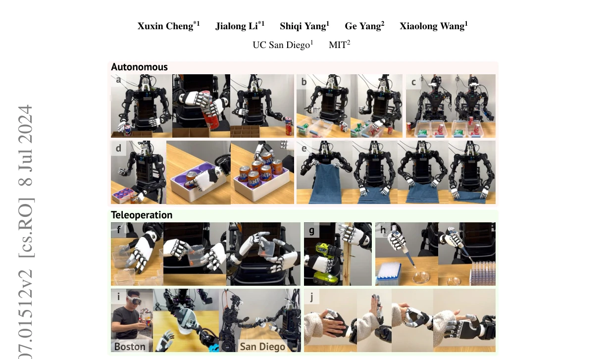
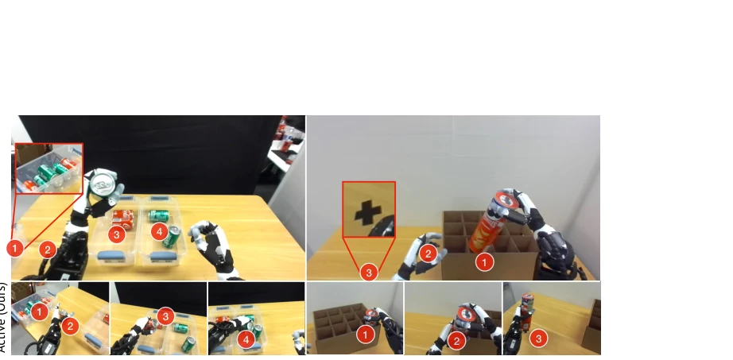
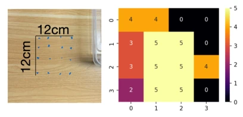
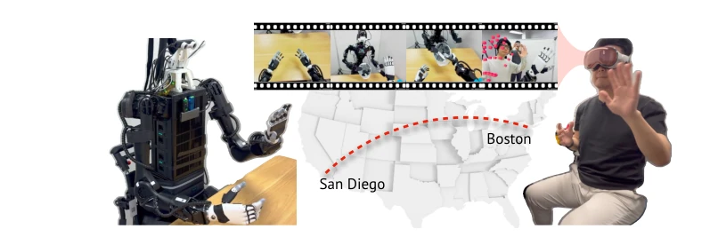

Open-TeleVision: Teleoperation with Immersive Active Visual Feedback
Xuxin Cheng, Jialong Li, Shiqi Yang, Ge Yang, Xiaolong Wang abspdf
论文点评Review
这系统把 VR 和机器人头动结合得挺溜，Stereo 视频流确实比单目强，远程操作跨海岸线也是亮点。但别吹成 VLA 大模型，本质还是 Teleop + Imitation Learning。Active Head 解决了遮挡，但没触觉反馈，操作精细度依赖人。DinoV2 换 ResNet 提升明显，说明视觉 backbone 比架构更重要。算是给具身数据采集加了个“沉浸式”滤镜，但离真正的“自主智能”还差得远，毕竟核心还是人在控。系统开源不错，但硬件依赖 Vision Pro 和特定机器人，泛化性存疑。
This system integrates VR and robot head movement quite adeptly; stereo video streams are indeed superior to monocular ones, and remote operation across coastlines is also a highlight. However, do not hype it as a VLA large model; the essence remains Teleop + Imitation Learning. Active Head resolves occlusion, but lacks haptic feedback, with operational precision relying on the human. Replacing ResNet with DinoV2 yields significant improvement, indicating the visual backbone is more critical than the architecture. It essentially adds an "immersive" filter to embodied data collection, but is far from true "autonomous intelligence," as the core remains human-controlled. The system being open source is commendable, but hardware dependency on Vision Pro and specific robots raises doubts about generalization.
Embodied learning depends on high-quality demonstration data, yet existing teleoperation schemes exhibit significant pain points. Although ALOHA [12] is precise, it requires co-location and lacks remote capabilities; VR schemes such as OpenTeach [2] often suffer from occlusion due to fixed viewpoints and lack depth perception. Operators struggle to intuitively observe fine manipulation areas, and monocular video fails to provide adequate spatial understanding. Furthermore, existing systems generally do not support multi-finger dexterous hands or remote deployment. Open-TeleVision aims to address occlusion and depth issues via active perception (head motion following) and stereo vision, supporting remote, immersive, and high-precision data collection to provide a better foundation for imitation learning.

Figure 1: Autonomous and teleoperated sessions using our setup. a-e: robots executing long- horizon precision-sensitive tasks autonomously. f-j: robots executing fine-grained tasks with our immersive teleoperation system. a: unloading, in-hand passing; b: H1 can-sorting; c: GR-1 can- sorting; d: can-insertion; e: towel folding; f; earplugs packing; g: drilling; h:pipetting; i: two operators teleoperate two robots interactively. The operator of H1 robot is at Boston while both robots and GR-1 operator are at San Diego (approximately 3000 miles away). j: interactions with humans.
The system collects human pose based on VR devices (e.g., Vision Pro), which are redirected via a server and mapped to robot joints. The core innovation lies in "Active Perception": the robot head is equipped with an active gimbal that tracks the operator's head motion in real-time, providing a first-person stereo video stream back to the VR to eliminate occlusion and enhance depth perception. At the control level, Closed-loop Inverse Kinematics (CLIK) is employed for the arms, combined with the Dex-retargeting library to achieve fine mapping of dexterous hands/grippers, resolving hand shape differences through a vector optimizer. After data collection, the ACT architecture is utilized for imitation learning; the visual Backbone is replaced with DinoV2, with stereo image pairs as input, utilizing a Transformer encoder to capture the relationship between images and proprioception. The entire closed loop operates at 60Hz, supports remote internet transmission to achieve cross-regional control, and offers inference speed superior to wide-angle schemes.
Figure 2: Teleoperated data collection and learning setup. Left: our teleoperation system. VR devices stream the hand, head, and wrist poses to the server. The server retargets the human poses to the robot and sends joint position targets to the robot. Right: we train an imitation policy for each task with action chunking transformer. The transformer encoder captures the relationship of image and proprioception tokens and the transformer decoder outputs action sequences of a certain chunk size.Figure 5: Data collection using H1 on four tasks. Each row represents one task. At the end of each task, the operator postures to the same ending gesture to signify the successful completion of one demonstration. Then our system will stop recording data. We do not crop the ending gesture from our dataset. The learned policy can successfully react to ending conditions.
Experiments were conducted on Unitree H1 and Fourier GR-1 for tasks including classification, insertion, folding, and unloading. Comparison baselines included ResNet18 backbone and monocular input. Ablation studies indicate DinoV2 significantly outperforms ResNet18, and stereo input improves grasp success rates (e.g., Can Sorting increased from 46% to 92%). The active viewpoint offers 2x faster inference speed compared to wide-angle lenses and reduces irrelevant computation. User studies demonstrate that stereo vision significantly reduces operation time and improves success rates. Additionally, remote teleoperation from Boston to San Diego was successfully demonstrated, validating the system's latency and stability.

Figure 7: Comparison between wide-angle lenses and cropped views. Left: H1 Can Sorting. Right: Unloading. Wide angle images are of resolution 1280x720 and have a 102°(H) x 57°(V) field-of-view. Cropped images are cropped from the bottom middle from the original wide-angle images, and are of resolution 640x480. Red marks are the points of interests (PoIs) for the tasks. For Can Sorting, the PoIs are the bin with cans to be sorted, pick location, coke bin and sprite bin. For Unloading, the PoIs are tube slot, in-hand passing, and the drop location.Figure 8: More teleoperation experiments.These experiments aim to show our system’s reliability and precision for a wide variety of tasks.
其他图片Other Figures
Figure 4: Reference design of Open-TeleVision on two types of hardware. Left: Unitree H1 [19] with 6 DoF Inspire [22] hands. The head contains yaw and pitch motors. Right: Fourier GR-1 [20] with jaw gripper. The active neck is from the manufacturer with yaw roll and pitch motors.

Figure 6: Distribution of can placements. Left: The cans are placed in a f 4×4 grid. Right: number of successful pickings heatmap with 5 trials at each location.

Figure 9: Our system enables cross-country teleoperation over the internet. The operator at Boston, USA can operate a robot at San Diego, USA (approximately 3000 miles away). The robot and operator pictures are flipped left to right for better illustration.